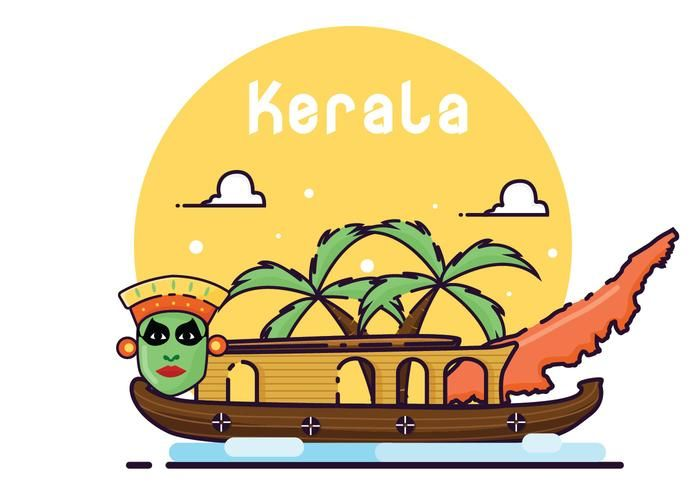
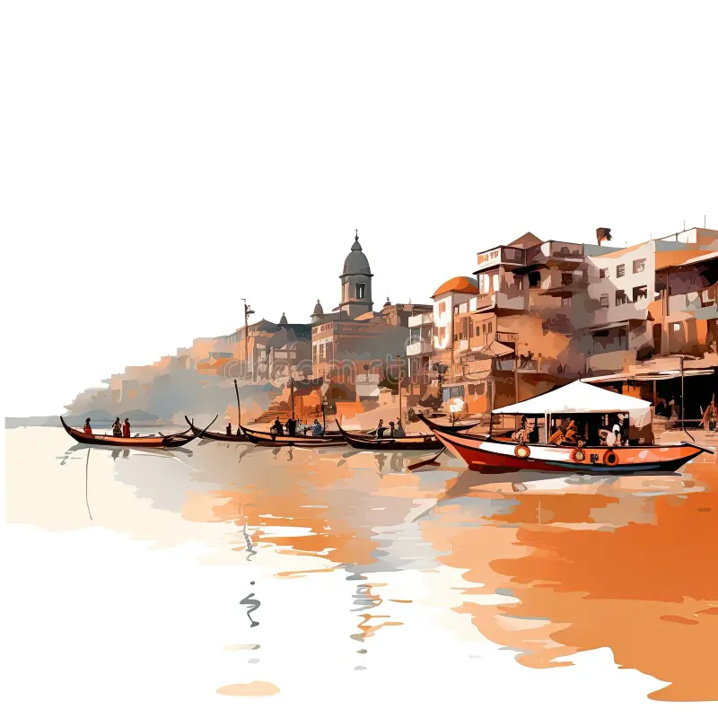
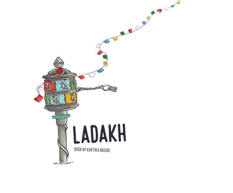

The Taj Mahal is one of the most iconic symbols of India. This stunning white marble mausoleum, built by Mughal Emperor Shah Jahan in memory of his beloved wife Mumtaz Mahal, is renowned for its architectural beauty and intricate craftsmanship.
Jaipur, Rajasthan
Jaipur, the capital of Rajasthan, is known as the "Pink City" due to its distinctly colored buildings. The city is famous for its palaces, forts, and vibrant culture.

Kerala Backwaters
Kerala, often referred to as "God's Own Country," is famous for its serene backwaters. The backwaters are a network of interconnected canals, rivers, and lakes, offering a unique and tranquil experience.

Varanasi, Uttar Pradesh
Varanasi, one of the oldest continuously inhabited cities in the world, is a major cultural and religious center for Hindus. It is known for its ghats along the River Ganges where pilgrims perform rituals and ceremonies.
Goa
Goa is famous for its beaches, vibrant nightlife, and Portuguese heritage. The state offers a mix of natural beauty and cultural experiences.

Ladakh, Jammu and Kashmir
Ladakh is known for its stunning landscapes and Buddhist monasteries. This high-altitude desert region is a haven for adventure enthusiasts and those seeking tranquility.